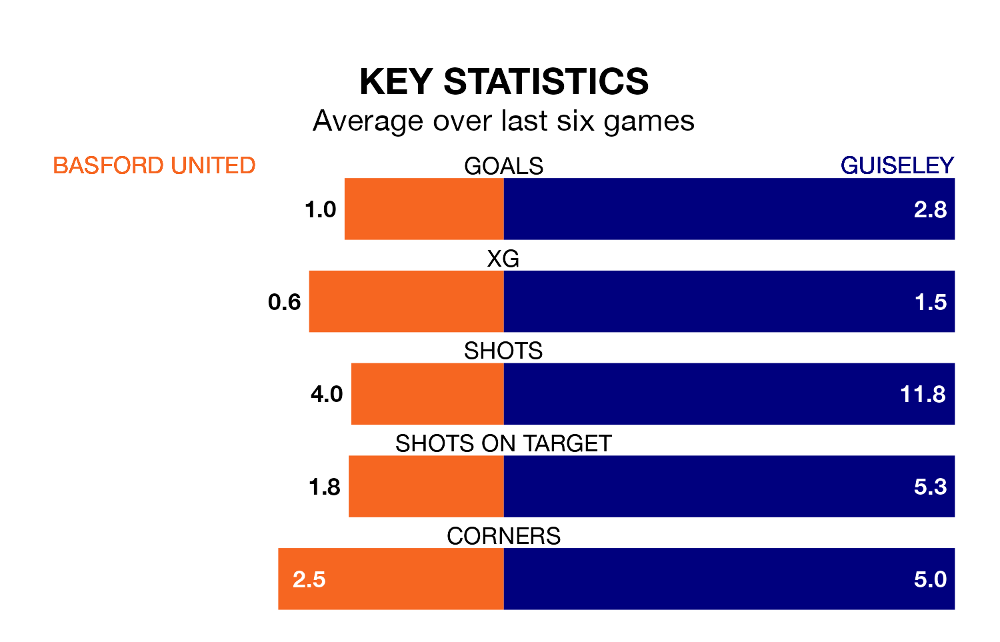

Basford United face Guiseley at Greenwich Avenue on Saturday looking to secure a first win in eight Northern Premier League games.
Basford have lost three and drawn four matches since they last earned three points – against Bradford Park Avenue on November 4.
They face a Guiseley side who have won four and drawn one over that time.
With 23 goals in 22 games so far this season, Basford are the league's third-lowest scorers with 1.0 goals per game. But they are conceding fewer than average too, letting in 36 goals at a rate of 1.6 per game.
Guiseley, meanwhile, are above average scorers, with 2.0 goals per game, compared to a league average of 1.7. They have conceded 1.7 goals per game.
United are 19th in the table after 22 games, of which they have won three and drawn seven, earning 16 points.
The Lions are 10 places ahead of the home team in ninth, with nine wins and six draws putting them on 33 points.
Basford's last match was on December 16, a 2-2 draw against Morpeth Town.
Guiseley drew 2-2 with Hyde United last time out, also on December 16.
